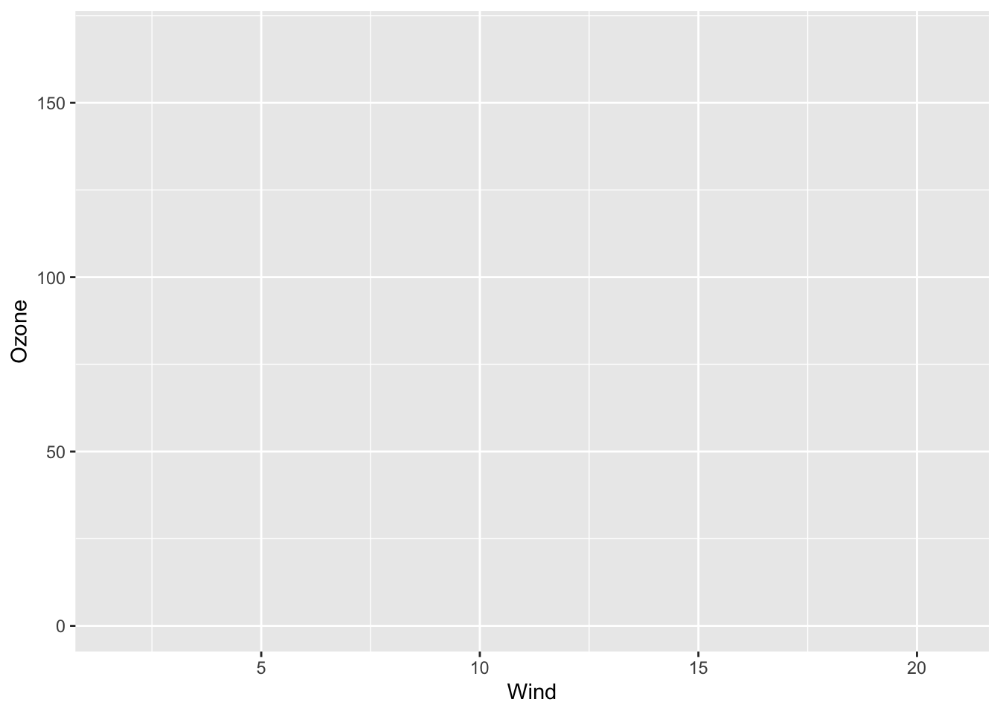
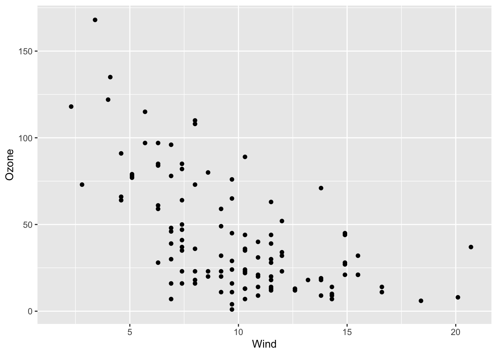
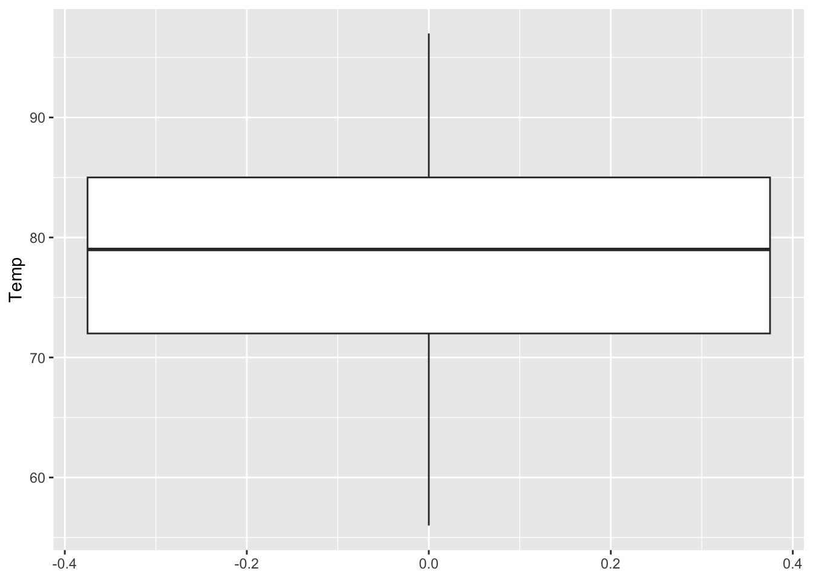
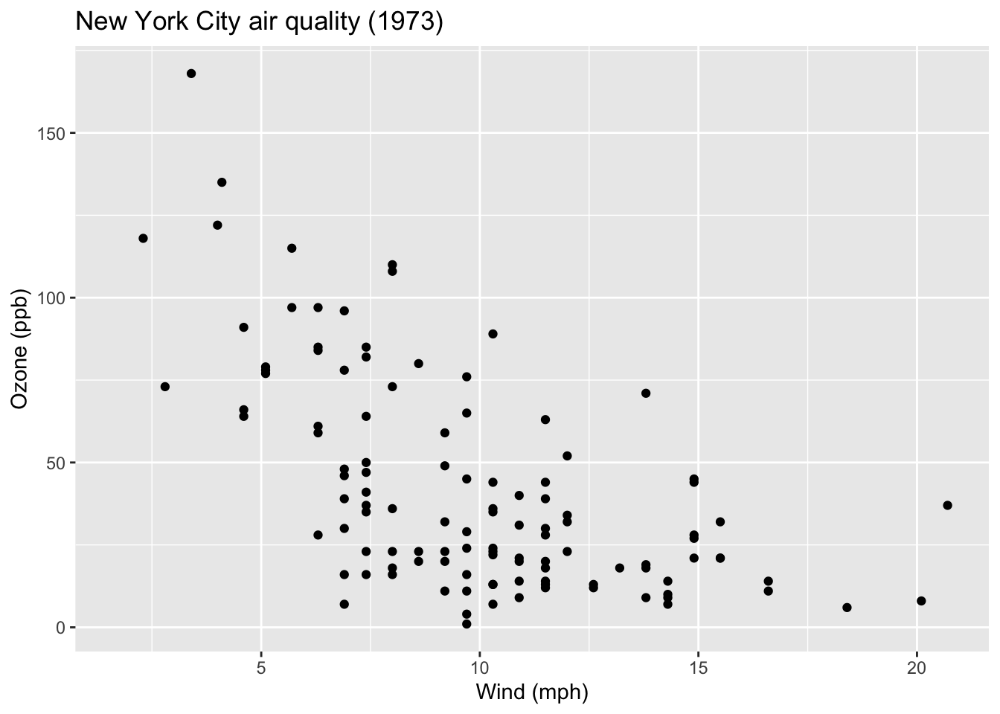

Grafische Darstellungen sind ein zentraler Bestandteil jeder Datenanalyse – oft erkennt man Muster, Ausreißer oder Fehler in den Daten erst dann, wenn man sie sich ansieht. In R gibt es mehrere Pakete, mit denen man Daten grafisch darstellen kann. In dieser Einheit verwenden wir durchgehend das Paket ggplot2 aus dem Tidyverse. Es folgt einer klar durchdachten Systematik (der sogenannten Grammar of Graphics), nimmt einem viel Arbeit ab (insbesondere bei gruppierten Daten, wo Farben und Legenden automatisch erzeugt werden) und ist eine ausgezeichnete Wahl für Grafiken in Publikationen und Abschlussarbeiten.
Hinweis
R bringt außerdem ein eingebautes Grafiksystem mit (das sogenannte Base-Plotting-System aus dem Paket graphics mit Funktionen wie plot(), hist() oder boxplot()). Da wir uns in dieser Lehrveranstaltung auf ggplot2 als einheitliches Grafiksystem konzentrieren, gehen wir auf das Base-Plotting-System nicht systematisch ein. Wir werden ihm aber an einer Stelle kurz begegnen, nämlich bei den diagnostischen Plots eines Regressionsmodells in Einheit 11. Für diesen Spezialfall gibt es in ggplot2 keine direkte Entsprechung; er wird an Ort und Stelle erklärt.
Für die folgenden Beispiele verwenden wir den in R enthaltenen airquality-Datensatz (eine kurze Beschreibung kann man dem Hilfetext ?airquality entnehmen):
str(airquality)
'data.frame': 153 obs. of 6 variables:
$ Ozone : int 41 36 12 18 NA 28 23 19 8 NA ...
$ Solar.R: int 190 118 149 313 NA NA 299 99 19 194 ...
$ Wind : num 7.4 8 12.6 11.5 14.3 14.9 8.6 13.8 20.1 8.6 ...
$ Temp : int 67 72 74 62 56 66 65 59 61 69 ...
$ Month : int 5 5 5 5 5 5 5 5 5 5 ...
$ Day : int 1 2 3 4 5 6 7 8 9 10 ...
Die Bestandteile einer Grafik
Zunächst müssen wir das Paket ggplot2 aktivieren:
library(ggplot2)
Eine Grafik besteht in ggplot2 aus drei Bestandteilen:
Daten: ein Data Frame (bzw. Tibble), welches die darzustellenden Daten enthält.
Mapping: die Zuordnung von Spalten zu grafischen Eigenschaften wie x- und y-Achse, Farbe oder Form. Ein solches Mapping wird mit aes() festgelegt (kurz für aesthetics).
Geom: die Art der grafischen Darstellung, also beispielsweise Punkte, Linien oder Balken.
Zu Beginn geben wir die Daten und das Mapping an ggplot() weiter. Damit entsteht allerdings noch keine fertige Grafik, sondern zunächst nur ein leeres Koordinatensystem mit passend skalierten Achsen:
ggplot(airquality, aes(x=Wind, y=Ozone))

Erst durch das Hinzufügen eines Geoms wird daraus eine vollständige Grafik. Für ein Streudiagramm ist das geom_point():
Warning: Removed 37 rows containing missing values or values outside the scale range (`geom_point()`).

Innerhalb von aes() schreibt man die Spaltennamen wie bei den dplyr-Verben ohne Anführungszeichen an. Wir weisen also die Spalten Wind und Ozone der x- bzw. y-Achse zu.
Hinweis
Die beiden Argumente von ggplot() heißen offiziell data und mapping – so wie bei den dplyr-Verben ist aber auch hier das erste Argument immer das Data Frame, weshalb man die Argumentnamen meistens weglässt. Ausgeschrieben wäre das vorige Beispiel also ggplot(data=airquality, mapping=aes(x=Wind, y=Ozone)).
Wichtig
Daten und Mapping müssen übrigens nicht zwingend an ggplot() übergeben werden. Sie können auch später für einzelne Geoms festgelegt werden. Ein Mapping, das man direkt in ggplot() angibt, gilt automatisch für alle nachfolgenden Geoms (man spricht hier von Vererbung). Ein einzelnes Geom kann aber auch ein eigenes, lokales Mapping mitbringen, das dann nur für dieses eine Geom gilt – ein Beispiel dafür sehen wir gleich bei den Histogrammen.
Hinweis
Die Warnung Removed 37 rows containing missing values ist in diesem Beispiel kein Fehler, sondern ein Hinweis: Die Spalte Ozone enthält 37 fehlende Werte, und diese kann ggplot2 natürlich nicht zeichnen. In den folgenden Beispielen blenden wir diese Warnung aus, damit die Ausgaben übersichtlich bleiben.
Die wichtigsten Geoms sind:
Geom
Darstellung
geom_point()
Punkte (Streudiagramm)
geom_line()
Linien (z.B. Zeitverläufe)
geom_histogram()
Histogramm
geom_density()
geschätzte Dichtefunktion
geom_boxplot()
Boxplot
geom_bar()
Balken mit Häufigkeiten
geom_jitter()
Punkte mit zufälliger Verschiebung
geom_smooth()
Ausgleichskurve bzw. Regressionsgerade
Diese Geoms sehen wir uns nun der Reihe nach an.
Histogramme
Mit Hilfe eines Histogramms kann man die Verteilung der Werte einer numerischen Spalte visualisieren. Hier gibt es nur ein Mapping für die x-Achse, denn die y-Achse (die Häufigkeit) berechnet geom_histogram() selbst:
Ohne Angabe von bins oder binwidth verwendet ggplot2 30 Balken und gibt eine entsprechende Meldung aus. Diese ist als Aufforderung zu verstehen, die Anzahl bewusst zu wählen: Zu wenige Balken verschleiern die Form der Verteilung, zu viele machen sie unruhig. Probieren Sie also ein paar Werte aus.
Standardmäßig werden auf der y-Achse die absoluten Häufigkeiten dargestellt. Alternativ kann man die Dichte anzeigen (also die Häufigkeit relativ zur Breite der Balken). Das ist insbesondere dann sinnvoll, wenn man zusätzlich eine geschätzte Dichtefunktion in dieselbe Grafik zeichnen möchte, denn nur dann passen die beiden Darstellungen in ihrer Skalierung zusammen:
Mit after_stat(density) legt man fest, dass auf der y-Achse nicht die Häufigkeiten, sondern die vom Geom berechnete Dichte dargestellt werden soll. Beachten Sie außerdem, dass dieses zusätzliche Mapping direkt beim Geom steht und nicht in ggplot() – es gilt also nur für dieses eine Geom.
An diesem Beispiel sieht man auch bereits ein essentielles Grundprinzip von ggplot2: Eine Grafik wird aus beliebig vielen Schichten zusammengesetzt, die man einfach mit + aneinanderhängt. Die Reihenfolge der Schichten ist dabei entscheidend, weil die erste Schicht zuerst gezeichnet wird, die zweite darüber, die dritte darüber usw. – so kann man also gezielt bestimmen, welche Elemente im Vordergrund und welche im Hintergrund liegen sollen. In unserem Beispiel wird zuerst das Histogramm gezeichnet und darüber die Dichtefunktion.
Boxplots
Eine weitere Möglichkeit, die Verteilung von Werten grafisch darzustellen, bietet geom_boxplot(). Ein Boxplot zeigt den Median, den Interquartilsabstand (IQR) sowie das Minimum und das Maximum (plus eventuelle Ausreißer) der Daten:
ggplot(airquality, aes(y=Temp)) +geom_boxplot()

Ein einzelner Boxplot ist aber relativ wenig hilfreich – interessant wird es, wenn man mehrere Gruppen vergleicht. Dazu bildet man die Gruppierungsspalte auf die x-Achse ab:
Die Spalte Month ist numerisch, wird hier aber als Gruppierung verwendet. Deshalb muss man sie mit factor() in einen Faktor umwandeln – sonst versucht ggplot2, eine kontinuierliche x-Achse zu erzeugen, und zeichnet einen einzigen breiten Boxplot über alle Monate hinweg. Diese Umwandlung kann man direkt innerhalb von aes() durchführen.
Rohdaten darstellen
Zusammenfassende Größen wie Mittelwert, Median oder Streuung verbergen immer einen Teil der Information. Eine Balkengrafik, welche nur die Mittelwerte der einzelnen Monate zeigt, wäre beispielsweise wenig aussagekräftig – man sieht weder, wie viele Datenpunkte dahinterstehen, noch wie stark diese streuen. Prinzipiell sollte man daher zusätzlich immer die Rohdaten in der Grafik darstellen. Genau dafür ist geom_jitter() gedacht, welches die Datenpunkte um einen zufälligen Betrag horizontal verschiebt, damit sie nicht alle exakt übereinanderliegen:
So kann man neben den statistischen Größen (wie Median, IQR, etc.) auch die tatsächlichen Werte der Datenpunkte sehen. Mit width legt man fest, wie stark die Punkte horizontal verschoben werden dürfen. Das Argument outlier.shape=NA unterdrückt die Ausreißer des Boxplots – diese sind ja ohnehin schon als Rohdaten vorhanden und würden sonst doppelt gezeichnet werden. Damit die Punkte reproduzierbar sind, haben wir außerdem den Zufallsgenerator mit set.seed(1) initialisiert.
Tipp
Das Argument alpha bestimmt die Transparenz der Punkte (1 bedeutet gar nicht transparent, 0 vollkommen transparent). Bei vielen überlappenden Punkten ist das hilfreich, weil man dann erkennen kann, wo besonders viele Datenpunkte liegen.
Balkendiagramme
Möchte man die Häufigkeiten der Stufen einer kategorialen Variable darstellen, verwendet man geom_bar(). Auch hier gibt es nur ein Mapping für die x-Achse, denn die Häufigkeiten werden automatisch bestimmt:
Dies ist die grafische Entsprechung zu der Häufigkeitstabelle, die wir in Einheit 6 mit table() erzeugt haben.
Liniengrafiken
Insbesondere bei Zeitverläufen möchte man die Datenpunkte meist mit Linien verbinden. Erstellen wir dazu zunächst aus den beiden numerischen Spalten Month und Day eine neue Spalte namens date (aus der Beschreibung der Daten kann man entnehmen, dass diese im Jahr 1973 aufgezeichnet wurden):
Die Funktion paste() fügt mehrere Character-Vektoren elementweise zu einem einzigen Vektor zusammen (standardmäßig wird zwischen den Elementen ein Leerzeichen eingefügt):
paste("Hello", "World")
[1] "Hello World"
Die einzelnen Argumente können Vektoren mit beliebiger Anzahl an Elementen sein:
paste(c("Hello", "Sup"), c("Jane", "John"))
[1] "Hello Jane" "Sup John"
Das Ergebnis der paste()-Funktion ist also folgender Character-Vektor:
Dieser Vektor kann dann mit der Funktion as.Date() mit dem Argument format="%m %d %Y" in einen Datumsvektor konvertiert werden (siehe dazu auch Einheit 5), welchen wir der Spalte date im Data Frame zugewiesen haben:
class(airquality[["date"]])
[1] "Date"
Anschließend können wir diese Datumsspalte für die Darstellung auf der x-Achse verwenden. Mit Datumswerten kann ggplot2 direkt umgehen und beschriftet die x-Achse automatisch mit den Namen der Monate:
Man erkennt mit dieser Liniengrafik auch sofort, dass es fehlende Werte in den Daten gibt (dort wo die Linie unterbrochen ist).
Grafiken anpassen
Oft möchte man diverse Eigenschaften einer Grafik anpassen, wie z.B. Farben, Symbole, Titel oder Achsenbeschriftungen. Beschriftungen legt man mit labs() fest, was man direkt als eigene Schicht zur Grafik hinzufügen kann:
ggplot(airquality, aes(x=Wind, y=Ozone)) +geom_point() +labs(x="Wind (mph)",y="Ozone (ppb)",title="New York City air quality (1973)" )

Eigenschaften, die nicht von den Daten abhängen sollen, gibt man direkt beim Geom an – also außerhalb von aes():
Mit den theme_*()-Funktionen kann man schließlich das generelle Aussehen der Grafik anpassen (Hintergrund, Gitternetz, Schriftgrößen). Beliebt sind etwa theme_minimal(), theme_bw() und theme_classic():
Der eigentliche Vorteil von ggplot2 zeigt sich, sobald man Gruppen unterscheiden möchte. Man bildet dazu die Gruppierungsspalte einfach auf eine grafische Eigenschaft wie color ab – Farben und Legende entstehen dann automatisch. Wir verwenden dafür wieder den penguins-Datensatz:
Der Unterschied zwischen innerhalb und außerhalb von aes() ist zentral: color=speciesinnerhalb von aes() bedeutet “färbe die Punkte nach der Spalte species”, color="red"außerhalb von aes() bedeutet “färbe alle Punkte rot”. Nur im ersten Fall entsteht eine Legende, denn nur dort steht die Farbe für eine Information aus den Daten.
Weitere Schichten
Weitere Bestandteile hängt man mit + einfach an. Besonders häufig braucht man geom_smooth() für eine Regressionsgerade in einem Streudiagramm:
Damit man eine Regressionsgerade erhält, muss man method="lm" angeben (für linear model). Standardmäßig wird eine nicht-parametrische Glättungskurve berechnet, die sich möglichst gut an die Datenpunkte anpasst (aber eben keine Gerade ist).
Hinweis
Das graue Band um die Linie stellt das 95%-Konfidenzintervall der Regressionsgeraden dar. Mit se=FALSE kann man dieses auch deaktivieren.
Wenn im aes() des ggplot()-Aufrufs eine Gruppierung definiert ist, gilt diese automatisch für alle Schichten – man bekommt so also eine Regressionsgerade pro Gruppe:
Vergleicht man die letzten beiden Grafiken, sieht man ein schönes Beispiel für Simpsons Paradoxon: Über alle Pinguine hinweg ist der Zusammenhang negativ, innerhalb jeder einzelnen Spezies aber deutlich positiv.
Mehrere Teilgrafiken mit facet_wrap()
Anstatt Gruppen über Farben zu unterscheiden, kann man sie auch in getrennten Teilgrafiken darstellen. Das übernimmt facet_wrap(), dem man die Gruppierungsspalte mit einer Tilde übergibt:
Der Ausdruck ~species ist eine sogenannte Formel. Eine Formel in R wird durch das Tilde-Zeichen (~) definiert, mit Ausdrücken links bzw. rechts davon. Ein Beispiel für eine Formel ist y ~ x mit y auf der linken Seite und x auf der rechten Seite; bei facet_wrap() bleibt die linke Seite leer. Die Bedeutung einer Formel hängt von der jeweiligen Funktion ab. Viele Funktionen verlangen Formeln als Argumente, wir werden dies vor allem bei der Berechnung von linearen Modellen intensiv nutzen.
Alle Teilgrafiken verwenden dabei automatisch dieselben Achsenbereiche, sodass man sie direkt miteinander vergleichen kann. Möchte man mehrere völlig unterschiedliche Grafiken nebeneinander anordnen, verwendet man am besten das Zusatzpaket patchwork, mit dem man fertige Grafiken mit + bzw. / kombinieren kann.
Grafiken speichern
Bisher haben wir Grafiken nur am Bildschirm betrachtet. Spätestens für eine Seminar- oder Abschlussarbeit möchte man sie aber als Datei speichern. In RStudio geht das im Bereich Plots über Export – für eine reproduzierbare Analyse sollte man das aber direkt im Script erledigen.
Dafür gibt es die Funktion ggsave(). Diese speichert standardmäßig die zuletzt erzeugte Grafik, und das Dateiformat wird automatisch aus der Dateiendung abgeleitet:
Die Datei penguins.png wird im aktuellen Arbeitsverzeichnis angelegt. Breite und Höhe werden standardmäßig in Zoll angegeben (das kann man mit dem Argument units ändern), und dpi setzt die Auflösung (der Standardwert von 300 ist für Ausdrucke gut geeignet).
Man kann eine Grafik aber auch zuerst einer Variablen zuweisen und diese dann explizit übergeben:
p =ggplot(penguins, aes(x=bill_len, y=bill_dep)) +geom_point()ggsave("penguins.pdf", plot=p, width=7, height=5)
Tipp
Für Publikationen ist ein Vektorformat wie PDF oder SVG meist die bessere Wahl, weil es sich beliebig skalieren lässt, ohne unscharf zu werden.
Übungen
Übung 1
Sehen Sie sich den Datensatz ToothGrowth an (lesen Sie auch die Hilfe dazu) und erstellen Sie damit einen aussagekräftigen Plot. Verwenden Sie Funktionen, die wir in dieser Einheit kennengelernt haben.
Übung 2
Verwenden Sie den Datensatz mtcars und erstellen Sie einen Boxplot der Variable mpg in Abhängigkeit von cyl. Welche Aussage können Sie aufgrund dieser Grafik machen (welche Fahrzeuge verbrauchen mehr bzw. weniger Kraftstoff)? Achten Sie auf die korrekte Interpretation des Kraftstoffverbrauchs in MPG (miles per gallon)!
Übung 3
Erstellen Sie mit dem Datensatz mtcars ein Streudiagramm der Spalten drat (Hinterachsübersetzung, x-Achse) und mpg (Kraftstoffverbrauch, y-Achse), in dem die Punkte entsprechend der Zylinderanzahl cyl eingefärbt sind. Fügen Sie danach eine Regressionsgerade pro Zylinderanzahl hinzu.
Stellen Sie dieselben Daten anschließend mit facet_wrap() in drei Teilgrafiken (eine pro Zylinderanzahl) dar, und speichern Sie diese Grafik mit ggsave() als PNG-Datei.